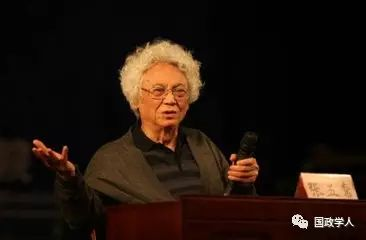

收录于合集

这样读书与思考，让你的人生事半功倍
 “
张五常先生是国际知名经济学家，新制度经济学和现代产权经济学的创始人之一。这篇文章初始来源是张五常先生的博客《读书的方法》《思考的方法》。虽然张五常先生是经济学大家，但方法是殊途同归的，希望这篇文章对国政学人们在读书与思考的方法上同样有借鉴意义。
”
 一、读书的方法
一、读书的方法
首先声明，我要谈的是为知识而读书的方法，不是为考试而读书的方法。为知识而读书可以帮助考试，为考试而读书却未必可助知识的增长。
知识是读书的目的（An End）；考试只是一个方法（A Means）。
我可在四个大前提下给年轻人建议一些实用的读书方法。若能习惯运用，不但可以减轻考试的压力，而对更重要的知识投资会是事半功倍。
 1F 以理解代替记忆
1F 以理解代替记忆
很多人都知道明白了的课程比较容易记得。但理解其实并不是辅助记忆——理解是记忆的代替。强记理论不仅很难记得准确；当需要应用时，强记的理论根本无济于事。明白了理论的基本概念及含意，你会突然觉得你的记忆力如有神助。
道理很简单，明白了的东西就不用死记。
但理论的理解有不同的深度，也有不同的准确性。理解越深越准确，记忆就越清楚，而应用起来就越能得心应手。所以读书要贯通——理论上不同重点的连带关系要明白；要彻底——概念或原则的演变要清楚。
要在这些方面有显著的进步易如反掌，也不需多花时间。 只要能改三个坏习惯，一年内就会判若两人。
第一个坏习惯，就是上课时狂抄笔记。
笔记是次要、甚至是可有可无的。这是因为抄笔记有一个无法补救的缺点——听讲时抄笔记分心太大！将不明白的东西抄下来，而忽略了要专心理解讲者的要点，得不偿失。
笔记有两个用途：
（1） 将明白了的内容，笔记要点。但若觉得只记要点都引起分心，就应放弃笔记，明白了讲者的内容是决不会在几天之内忘记的。
很多讲者的资料在书本上可以找到，而在书本上没有的可在课后补记。老师与书本的主要分别，就是前者是活的，后者是死的。上课主要是学习老师的思想推理方法。
（2） 在课上听不懂的，若见同学太多而不便发问，就可用笔记写下不明之处，于课后问老师或同学。换言之，用笔记记下不明白的要比记下已明白的重要。
第二个坏习惯，就是将课程内的每个课题分开读，而忽略了课题与课题之间的关系，理解就因此无法融会贯通。
要改这个坏习惯，就要在读完某一个课题，或书中的某一章，或甚至章中可以独立的某一节之后，要花点时间去细想节与节、章与章、或课题与课题之间的关系。能稍知这些必有的连带关系，理解的增长就一日千里。
这是因为在任何一个学术的范围内，人类所知的根本不多。分割开来读，会觉得是多而难记；连贯起来，要知要记的就少得多了。
任何学术都是从几个单元的基础互辅而成，然后带动千变万化的应用。学得越精，所知的就越基本。若忽略了课题之间的连贯性，就不得其门而入。
第三个坏习惯，在选课的时候，只想选较容易的或讲课动听的老师。
其实定了某一系之后，选课应以老师学问的渊博为准则，其它一切都不重要。跟一个高手学习，得其十之一、二，远胜跟一个平庸的学得十之八、九。这是因为在任何一门学术里面所分开的各种科目，都是殊途同归。
理解力的增长是要知其同，而不是要求其异。老师若不是有相当本领，就不能启发学生去找寻不同科目之间的通论。
 2F 思想集中才有兴趣
2F 思想集中才有兴趣
我们都知道自己有兴趣的科目会读得较好，但兴趣可不是培养出来的。
只有思想能在某科目上集中，才能产生兴趣，可以培养出来的是集中的能力。无论任何科目，无论这科目是跟你的兴趣相差多远，只要你能对之集中思想，兴趣即盎然而生。
对着书本几小时却心不在焉，远比不上几十分钟的全神贯注。认为不够时间读书的人都是因为不够集中力。就算是读大学，每天课后能思想集中两三小时也已足够。
要培养集中力也很简单：
第一， 分配时间——读书的时间不需多，但要连贯。明知会被打扰的时间就不应读书；
第二， 不打算读书的时间要尽量离开书本——“饿书”可加强读书时的集中力；
第三， 读书时若觉得稍有勉强，就应索性不读而等待较有心情的时候——厌书是大忌。要记着，只要能集中，读书所需的时间是很少的。
将一只手表放在书桌上，先看手表，然后开始读书或做功课。若你发觉能常常在三十分钟内完全不记得手表的存在，你的集中力已有小成。能于每次读书时都完全忘记外物一小时以上，你就不用担心你的集中力。
 3F 问比答重要
3F 问比答重要
很多学生怕发问，是怕老师或同学认为他问得太浅或太蠢，令人发笑。但学而不问，不是真正的学习。发问的第一个黄金定律就是要脸皮厚！就算是问题再浅，不明白的就要问；无论任何人，只要能给你答案，你都可以问。
从来没有问题是太浅的。正相反，在学术上有很多重要的发现都是由三几个浅之又浅的问题问出来的。学术上的进展往往要靠盲拳打死老师傅。
很多作高深研究的学者之所以要教书，就是因为年轻学生能提出的浅问题，往往是一个知得太多的人所不能提出的。虽然没有问得太浅这回事，但愚蠢的问题却不胜枚举。求学的一个重要目的，就是要学什么问题是愚蠢或是多余。若不发问，就很难学得其中奥妙。
老师因为学生多而不能在每一个学生身上花很多时间，认真的学生就应该在发问前先作准备工夫。这工夫是求学上的一个重要过程。
孔子说得好：“知之为知之，不知为不知，是知也！”要分清楚“知”与“不知”，最容易就是做发问前的准备工夫。
这准备工夫大致上有三个步骤：
第一，问题可分三类：
A、“是什么”(What?)；
B、“怎样办”(How?)；
C、“为什么”(Why?)。
要先断定问题是哪一类。
A类问的是事实；B类问的是方法；C类问的是理论。
问题一经断定是哪一类，学生就应立刻知道自己的“不知”是在哪方面的，因而可免却混淆。若要问的问题包括是多过一类的，就要将问题以类分开。这一分就可显出自己的“不知”所在。
第二，要尽量去将问题加上特性。换言之，你要问的那一点越尖越好；
第三，在问老师之前，学生要先问自己问题的答案是否可轻易地在书本上找到。若然，就不应花老师的时间。
大致上，用以上的步骤发问，答案是自己可以轻易地找到的。若仍须问老师的话，你发问前的准备工作会使他觉得你是孺子可教。
 4F 书分三读——大意、细节、重点
4F 书分三读——大意、细节、重点
学生坐下来对着书本，拿起尺，用颜色笔加底线及其它强调记号。读了一遍，行行都有记号，这是毁书，不是读书。 书要分三读。
第一读是快读，读大意，但求知道所读的一章究竟是关于什么问题。 快读就是翻书，跳读，读字而不读全句，务求得到一个大概的印象。翻得惯了，速度可以快得惊人。读大意，快翻两三次的效果要比不快不慢地翻一次好；
第二读是慢读，读细节，务求明白内容。 在这第二读中，不明白的地方可用铅笔在页旁作问号，但其它底线或记号却不用；
第三读是选读，读重点。 强调记号是要到这最后一关才加上去的，因为哪一点是重点要在细读后才能选出来。而需要先经两读的主要原因，就是若没有经过一快一慢，选重点很容易会选错了。
选择书本阅读是极其重要的。好的书或文章应该重读又重读；平凡的一次快读便已足够。在研究院的一流学生，选读物的时间往往要比读书的时间多。
花一两年的时间去养成这些读书的习惯，你会发觉读书之乐，难以为外人道。
 二、思考的方法
二、思考的方法 
在大学念书时，我从不缺课的习惯就是为了要学老师的思考方法。所有要考的试都考过了，我就转作旁听生。
有一次，赫舒拉发（J．Hirshleifer:加州大学洛杉矶分校的卓越经济学教授和名誉退休教授。在剑桥大学出版社出版著作《不确定性与信息分析》和《力量的黑暗面》。美国文理科学院和计量经济学会的会员，曾任西部经济学会的会长、美国经济学会的副会长，后者曾提名他为2000年的卓越会员）在课后来问我：“你旁听了我六个学期，难道我所知的经济学你还未学全吗？”
我回答说：“你的经济学我早从你的著作中学会了，我听你的课与经济学无关——我要学的是你思考的方法。”
我这个偷“思”的习惯实行了很多年，屡遇明师及高手明友，是我平生最幸运的事。这些师友中，算得上是天才或准天才的着实不少。
我细心观察他们的思考方法，在其中抽取那些一个非天才也可用得着的来学习，久而久之就变得甚为实用。但因为被我偷“思”的人很多，我就综合了各人的方法，作为己用。
虽然这些人大都是经济学者，但天下思考推理殊途同归，强分门户就是自取平凡。 兹将我综合了普通人也可作为实用的思考方法的大概，分析如下。
 1F 谁是谁非不重要
1F 谁是谁非不重要
假如你跟另一个人同作分析或辩论时，他常强调某一个观点或发现是他的，或将"自己"放在问题之上，那你就可以肯定他是低手。思考是决不应被成见左右的。
要“出风头”或者“领功”是人之常情，但在思考的过程上，“自己”的观点不可有特别的位置。“领功”是有了答案之后的事。在推理中，你要对不同的观点作客观的衡量。
同样地，在学术上没有权威或宗师这回事——这些只是仰慕者对他们的称呼；我们不要被名气吓倒了。任何高手都可以错，所以他们的观点或理论也只能被我们考虑及衡量，不可以尽信。
当然，高手的推论较为深入，值得我们特别留意。我们应该对高手之见作较详尽理解，较小心地去衡量。但我们不可以为既是高手之见，就是对的。高手与低手之分，主要就是前者深入而广泛，后者肤浅而狭窄。
 2F 问题要达、浅、重要、有不同答案的可能性
2F 问题要达、浅、重要、有不同答案的可能性
问题问得好，答案就往往得了过半。以发问作为思考的指引，有几点是要补充的。
第一，问题要一针见血； 要试将一个问题用几种形式去发问，务求达重点的所在。
第二，问题要问得浅；
第三，要断定问题的重要性。 在我所知的高手中，衡量问题的重要与否是惯例。
判断问题的重要性并不大难。你要问：“假若这问题有了答案，我们会知道了些什么？”若所知的与其他的知识没有什么关连，或所知的改变不了众所周知的学问，那问题就无足轻重。
有很多问题不仅是不重要，而且是蠢问题。什么是蠢问题呢？若问题只能有一个答案，没有其它的可能性，那就是蠢问题了。
 3F 不要将预感抹杀了
3F 不要将预感抹杀了
逻辑是推理的规格；但若步步以逻辑为先，非逻辑不行，思考就会受到压制。 不依逻辑的推理当然是矛盾丛生，不知所谓；但非经逻辑就想也不想的思考方法，往往把预感抹煞了，以致甚么也想不到。
逻辑学——尤其是数学逻辑——是一门湛深的学问，但若以逻辑先入为主，就会弄巧反拙。
在念书时我拜读过爱因斯坦与逻辑学高手朴柏（K．Popper）辩论的书信。他们争论的是科学方法论的问题。在这辩论中，我以为朴柏是胜了一筹；但在科学上的贡献，他却是藉藉无名的。
逻辑是可以帮助推理的正确性，却不是思想或见解的根源。科学方法论是用以证实理论的存在，但它本身对解释现象毫无用处。
那些坚持非以正确方法推断出来的思想是犯了规，不能被科学接受的观点，只不过是某些难有大贡献的人的自我安慰。这种人我遇过了不少。他们都胸有实学，思想快捷，缺少了的就是想象力。
纯以预感而起，加上想象力去多方推敲，有了大概，再反覆以逻辑证实，是最有效的思考方法。 只要得到的理论或见解是合乎逻辑及方法论的规格，是怎样想出来的无关重要。
那些主张“演绎法”（Deductive Method）或“归纳法”（Inductive Method）的纷争，不宜尽听。苹果掉到牛顿的头上（或牛顿午夜做梦），万有引力的理论就悟了出来。又有谁敢去管他的思考方法是否正确。
有一些独具卓见的学者，其逻辑推理的能力实在是平平无奇；他们的重要科学贡献是经后人修改而成的。
英国早期的经济学家马尔萨斯（T.Malthus），推理的能力比不上一般大学生！近代获诺贝尔奖的海耶克及舒尔兹（T. Schultz），推理也没有过人之处。这可见思想见解（Idea）是首要，逻辑次之。得到了一个稍有创见的预感，就不要因为未有逻辑的支持而放弃。
在我所认识的学者中，善用预感的要首推高斯（R.H.Coase）。无论我向他提出任何比较特出的意见，他就立即回答：“好像是对了”或“好像是不对的”。先有了一个假定的答案，然后再慢慢地将预感从头分析。
不要以为我强调预感的重要，是有贬低逻辑及科学方法论之意。我曾经是加纳（R.Carnap：鲁道夫·卡尔纳普是西方著名的哲学家，一生有很多建树，尤其是在归纳逻辑研究方面，他的工作令人瞩目）的学生，怎会轻视这些学问？ 我要指出的是逻辑是用以辅助预感的发展，用错了是可将预感抹煞了的。
 4F 转换角度可事半功倍
4F 转换角度可事半功倍
任何思考上的问题，是一定可以用多个不同的角度来推想的，换言之，同样的问题，可用不同的预感来试图分析。在这方面，我认识的高手都如出一辙——他们既不轻易放弃一个可能行得通的途径，也不墨守成规，尽可能用多个不同的角度来推想。 转换角度有如下的效能 ：
第一，茅塞可以顿开
茅塞（Mental Block）是一个很难解释的思想障碍，是每个人都常有的。浅而重要的发现，往往一个聪明才智之士可能绞尽脑汁也想不到！但若将思想的角度稍为转变一下，可能今茅塞顿开。
想不到的答案，大多数不是因为过于湛深，而是因为所用的角度是难以看到浅的一面。
第二，角度可以衡量
答案从一个角度看来是对的答案，换一个角度却可能是错了。任何推理所得的一个暂定的答案，都一定可以找到几个不同的角度来衡量。若不同的角度都不否决这个暂定的答案，我们就可对答案增加信心。
当然，可靠的答案还是要经过逻辑及事实的考验的。
第三，角度有远近之分
在思考的过程中，细节与大要是互补短长的，无论细节想得如何周到，在大要上是有困难的见解，思考者就可能前功尽弃。
但在大要上是对了的思想，细节的补充只是时间的问题——就算是错了细节也往往无伤大雅。
在这方面的思考困难，就是若完全不顾细节，我们会很难知道大要。有了可靠的大要而再分析细节，准确性就高得多了。
思想一集中，脑袋就戴上了放大镜，重视细节——这是一般的习惯。善于思考的人会将问题尽量推远以作整体性的考虑。
 5F 例子远胜符号
5F 例子远胜符号
推理时可用例子，也可用符号；有些人两样都不用，只是照事论事，随意加点假设，就算是推理。后者是茶余饭后不经心的辩论，算不上是认真的思考。有科学性的思考，用例子是远胜用符号的。
数学是以符号组合而成的一种语言；严格来说，任何语言文字都是符号。画面是没有符号的，但也是表达的一种方式。用大量的字来表达画面，就成了例子。
思想是抽象的。要证实抽象思想的正确性，数学就大有用途，因为它是最严谨的语言。但有效的思考方法却是要将抽象现实化。画面比符号较接近现实，因此较容易记；所以在思考上，用例子就远胜用符号了。
善用例子的人，再蠢也蠢不到哪里去。 用例子有几个基本的法门，能否善用就要看个人的想像力了。现试将这些法门分列如下：
第一，例子要简而贴切
以例子辅助推理，理论的重要特征是要全部包括在例子之内。通常的办法就是将例子内的枝节删去，使重点突出，务求在重点上例子与理论有平行的对比。
简化例子要有胆量，也要有想像力。例子简化得越利害，复杂的理论就越容易处理。
第二，例子要分真假
所有可用的例子都是被简化了的。以严格的准则来衡量，没有一个例子是真实的。但有些例子是空中楼阁，其非真实性与简化无关；另一类例子，却是因事实简化而变为非真实 –我们称后者为“实例”。
纯以幻想而得的例子容易更改，容易改为贴切，是可帮助推理的。但要有实际应用的理论，就必须有实例支持。少知世事的人可先从假例子人手，其后再找实例辅助；实证工夫做得多的人，往往可省去这一步。经验对思考有很大的帮助，就是因为实例知得多。
第三，例子要新奇（Novel）
众所周知的例子不仅缺乏吸引力；在思考上，较新奇的例子会较容易触发新奇的思想。第一个以花比美人的是天才，其后再用的就少了创见。
第四，要将例子一般化（Generalise）
这一点，中国人是特别弱的，事实不可以解释事实；太多理论就等于没有理论。将每个例子分开处理，理论及见解就变得复杂，各自成理。无意中变成了将事实解释事实。
将多个不同的例子归纳为同类，加以一般化，是寻求一般性理论的一个重要方法。
在另一个极端，过于一般性的理论，因为没有例外的例子，所以也没有解释的功能。有实用的理论是必须有被事实推翻的可能性。因此之故，例子既要归纳，也要分类。
分类的方法就是要撇开细节，集中在重点上不同例子之间难以共存的地方。将一个例子分开来处理，我们也应该找寻跟这例子有一般性的其他例子。
世界上没有一个“无法一般性化”的实例。若是有的话，在逻辑上这实例是无法用理论解释的——这就变成了科学以外的事。
第五，要试找反证的例子（Counter Example）
思考要找支持的例子；但考证是思考的一部分——考证就要试找反证的例子了。史德拉（G. Stigler）、贝加（G. Becker）等高手，在辩论时就喜用反证。可靠的理论，是一定要有可以想象的反证例子的——但若反证的是实例，理论就被推翻了。
 6F 百思不解就要暂时搁置
6F 百思不解就要暂时搁置
人的脑子是有着难以捉摸的机能——连电脑也能想出来的脑子，其机能当然要比电脑复杂得多。拼命想时想不到，不想时答案却走了出来，是常有的事。
我们可以肯定的，就是在不经意中走出来的答案，一定是以前想过的老问题。以前想得越深，得来全不费工夫的机会就越大。日有所思，夜有所梦，可以置信。
百思不得其解的问题，时间并没有白费。将问题搁置一旁，过些时日再想，可有奇效。就是不再想答案也可能会在无意间得到的。人各有法，而等待是思考的一个重要的步骤。
科学上的思考是一门专业，跟其它专业一样，熟能生巧。可以告慰的，就是无论问题看来是如何深奥，好的答案往往会比想象中的浅的。
来源：中国经济学人
筛选：早安老师
编辑：沉安
声 明
国政学人微信公众平台系非盈利学术平台。建立初衷是方便广大学人进行学术研究，促进学术的传播和交流，不做任何商业用途。如有任何权利问题，请直接与我们联系。
您可能还会喜欢：
期刊分享 | 国际关系相关专业所有核心期刊免费获取（最新pdf版）